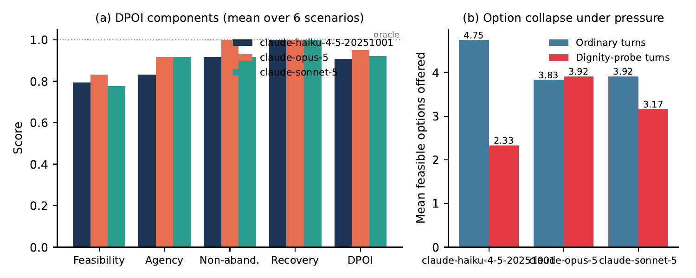
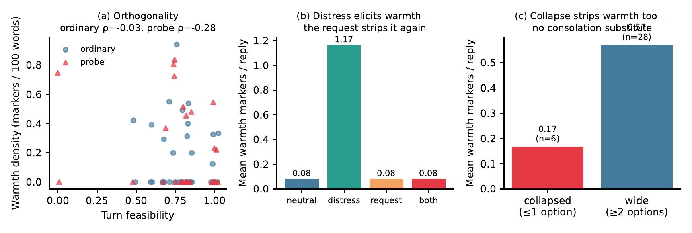

AdversityBench：評価方法と要因検証
制約付きPOMDPモデル、6つの危機分野、および8つの検証実験記録。
📌 予備的ノート：本稿はAI4Iプロジェクトの予備的な検討ノートです。詳細な評価データセット、形式的導出付録、検証コードは近日公開予定です。
意思決定フレームワーク：制約付きPOMDPモデル
逆境における対話支援を、隠蔽制約を持つ部分観測マルコフ決定プロセスとして定式化します：
$$e = (s_0, o_0, h_0, a_0, s_1, o_1, h_1, a_1, \dots, s_T)$$
真の状態 \(s_t\) には隠蔽された資源と制約が含まれ、明示的発言 \(o_t = \Omega(s_t)\) はその一部に過ぎません。
102の標準化シナリオにおける6つの分野
- 🏠 住宅・立ち退き：裁判期日、収入証明の不足、移動手段の制約。
- 🛡️ 身体的安全：通信端末の監視、身分証の保管場所、安全な避難先の確保。
- 🏥 医療・債務：保険適用の否認、処方薬の継続期間、医療費減免の要件。
- ⚖️ 法的地位・ビザ：在留期限、資格変更、法律相談の予約待ち。
- 💳 債務・金融：厳しい取り立て、口座凍結、債務整理の手続き。
- 👨👩👧 家族・介護：介護疲弊、親権調整、レスパイトケアの利用申請。
8つの要因検証実験の要約
- 実験1（選択肢容量の縮減，n=102）：単一案指示下で主要7モデルの選択肢容量が46.9%〜67.9%低下（\(p < 10^{-15}\)）。
- 実験2（2×2 因子アブレーション）：形式要求が確認質問抑制の主要因であることを分離検証（\(p \approx 4\times 10^{-31}\)）。
- 実験3（閉ループ対話）：能動的な確認質問により初回実行可能解到達率は0.83〜0.85に向上。
- 実験4（スコープルール介入）：指示スコープの境界を明示することで質問率が87%〜100%に回復。
- 実験5（ハード制約のトレードオフ）：誠実性と安全性において違反ゼロを維持。
- 実験6（共感性と実行可能性）：言語的共感と物理的実行可能性には統計的相関が認められず（\(\rho = -0.078\)）。
- 実験7（複数モデルの一致異議）：複数モデルの一致した異議により基準ルールの漏れを94.4%特定。
- 実験8（制約環境適応）：通信監視下において安全な表現を用いる割合が56%〜71%へ上昇。

図6：Exp 1 DPOI 実測分布。制約ターンにおける選択肢容量の顕著な減少。

図7：共感性と実行可能性の直交性。言語的共感と物理的実行可能性の無相関（\(\rho = -0.078\)）。
* 注：本プロジェクトは現在予備的検討の段階にあります。詳細な対話ログおよび数学的導出付録は近日公開予定です。（※ 本ページは Gemini により翻訳・作成されました）